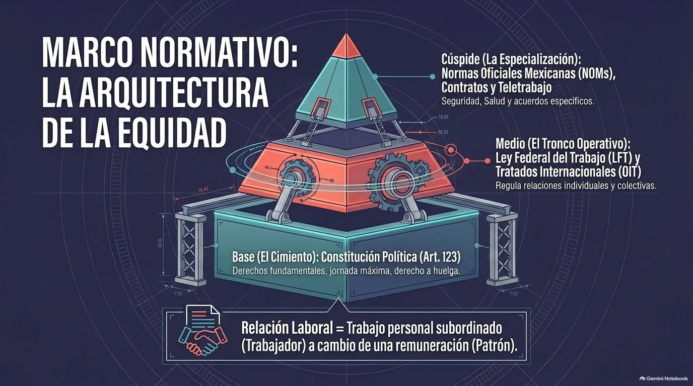
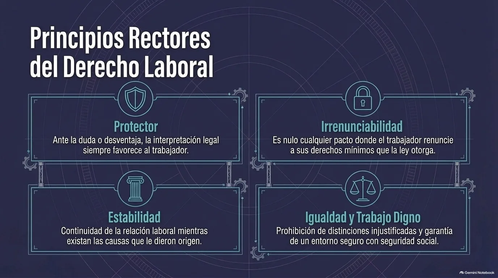
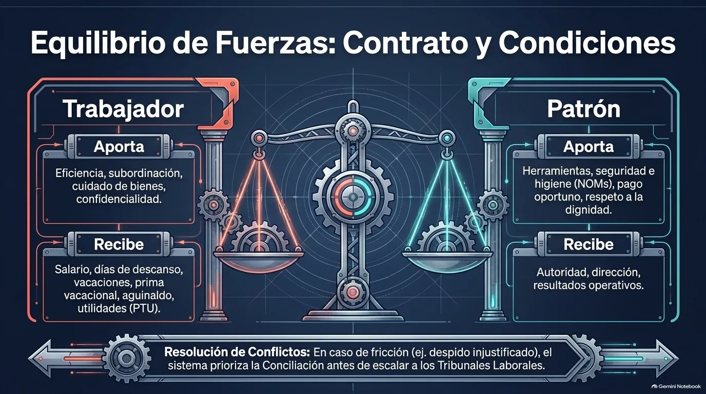

Unidad IV · Tema 4.2
Marco Normativo de las Relaciones Laborales
Toda relación de trabajo involucra intereses distintos: los del trabajador que presta su servicio y los del patrón que lo recibe y lo paga. El marco normativo existe para equilibrar esos intereses; conocerlo y cumplirlo evita sanciones y conflictos, y permite relaciones de trabajo justas, estables y productivas.
4.2.1¿Qué es la relación laboral y el marco normativo?
La relación laboral es el vínculo jurídico que se forma entre una persona que presta un trabajo subordinado, el trabajador, y otra que lo recibe y le paga por él, el patrón o empleador. Para regular ese vínculo, el Estado establece un marco normativo: el conjunto de leyes, reglamentos, normas y acuerdos que definen los derechos, las obligaciones y las condiciones en las que debe realizarse el trabajo.
4.2.2Fuentes del derecho laboral
El derecho laboral se apoya en fuentes ordenadas por jerarquía. En México, la base es la Constitución Política de los Estados Unidos Mexicanos, cuyo artículo 123 establece los derechos fundamentales de los trabajadores: jornada máxima, salario mínimo, derecho a asociarse en sindicatos, huelga y seguridad social. De ese artículo se desprende la Ley Federal del Trabajo (LFT), el ordenamiento principal en la materia, que regula con detalle las relaciones individuales y colectivas de trabajo.
A ellas se suman los tratados internacionales ratificados por el país, como los convenios de la Organización Internacional del Trabajo (OIT), que influyen en la legislación nacional y en ocasiones obligan a modificarla, y otras leyes complementarias como la Ley del Seguro Social, la Ley del Infonavit y las Normas Oficiales Mexicanas (NOM) sobre seguridad y salud en el trabajo, que regulan aspectos como el manejo de sustancias peligrosas o la ergonomía. Los contratos individuales y colectivos, los reglamentos interiores y la costumbre también son fuentes, siempre que no vayan en contra de los mínimos que marca la ley.

Nota. Infografía del material didáctico de la Unidad 4, con base en la Constitución Política de los Estados Unidos Mexicanos (1917) y la Ley Federal del Trabajo (1970).
4.2.3Principios del derecho laboral
El derecho del trabajo se guía por principios que orientan cómo se interpreta y se aplica la norma:
Protector
Reconoce que el trabajador está en desventaja frente al empleador; ante una duda de interpretación, la norma se aplica en favor del trabajador.
Irrenunciabilidad
Los trabajadores no pueden renunciar a los derechos mínimos que la ley les otorga; cualquier pacto en ese sentido no tiene validez.
Estabilidad
La relación de trabajo continúa mientras existan las causas que le dieron origen, lo que da certeza y beneficios por antigüedad.
Igualdad y trabajo digno
Prohíbe distinciones injustificadas por género, origen, edad, religión u otras condiciones, y exige seguridad social, salario suficiente y un entorno seguro.

Nota. Infografía del material didáctico de la Unidad 4 de Gestión Empresarial (ESCOM - IPN), generada con Gemini Notebook.
4.2.4Sujetos de la relación laboral
| Sujeto | Tipo | Descripción |
|---|---|---|
| Trabajador | Individual | Persona física que presta a otra un trabajo personal subordinado, bajo su dirección y autoridad. |
| Patrón | Individual | Persona física o moral que utiliza los servicios de uno o varios trabajadores y asume las obligaciones de esa relación. |
| Sindicato | Colectivo | Asociación de trabajadores constituida para estudiar, mejorar y defender sus intereses. |
| Autoridades laborales | Colectivo | Inspección del trabajo, centros de conciliación y tribunales laborales: vigilan el cumplimiento de la norma y resuelven conflictos. |
4.2.5Contrato de trabajo y condiciones de trabajo
La relación de trabajo normalmente se formaliza con un contrato, que puede ser por tiempo indeterminado, por tiempo determinado, para obra determinada, o bajo esquemas como el periodo de prueba y la capacitación inicial, según la naturaleza del trabajo.
Las condiciones de trabajo nunca pueden ser inferiores a los mínimos legales y deben constar por escrito, respetando la igualdad de trato entre quienes realizan funciones parecidas. Incluyen:
4.2.6Derechos y obligaciones de las partes
| Trabajador | Patrón | |
|---|---|---|
| Derechos | Salario justo y puntual, seguridad social, descansos y vacaciones, capacitación, condiciones seguras e higiénicas, libre asociación, trato digno y sin discriminación. | Dirigir y organizar el trabajo y sancionar el incumplimiento de obligaciones, siempre dentro de los límites de la ley. |
| Obligaciones | Cumplir con eficiencia sus funciones, seguir las normas de la empresa, cuidar los bienes que se le confían y guardar confidencialidad. | Pagar salarios y prestaciones, inscribir al personal en la seguridad social, proporcionar herramientas, garantizar seguridad y salud, y respetar la dignidad de las personas. |

Nota. Infografía del material didáctico de la Unidad 4, con base en la Ley Federal del Trabajo (1970).
4.2.7Terminación de la relación laboral y conflictos
La relación de trabajo puede terminar por varias causas. La rescisión ocurre cuando una de las partes la da por terminada porque la otra incumplió gravemente: es sin responsabilidad para el patrón cuando el trabajador incurre en una causa justificada señalada por la ley; en cambio, el despido injustificado obliga al patrón a indemnizar al trabajador. La relación también termina por mutuo acuerdo, renuncia voluntaria, muerte del trabajador, vencimiento del plazo o conclusión de la obra, o por una incapacidad que haga imposible prestar el servicio.
1. Conciliación
Paso previo obligatorio para buscar un acuerdo entre las partes.
2. Tribunales laborales
Resuelven las controversias que no se solucionaron en la conciliación.
4.2.8Relaciones colectivas de trabajo
Además de las relaciones individuales, el marco normativo regula las relaciones colectivas entre empleadores y organizaciones de trabajadores, que comprenden la libertad sindical, la negociación colectiva y el derecho de huelga:
Breakout: Marco normativo de las relaciones laborales
Comprueba tu comprensión
Repasa las fuentes, los principios y las reglas básicas de la relación de trabajo en México.